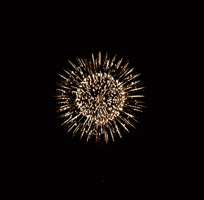

<!--
  Generated template for the WelcomePage page.

  See http://ionicframework.com/docs/components/#navigation for more info on
  Ionic pages and navigation.
-->
<ion-header>

<!--   <ion-navbar>
    <ion-title>welcome</ion-title>
  </ion-navbar>
 -->
</ion-header>


<ion-content class="welcome" padding >

  

  <div class="fireback  fadeIn " padding>

  <h2>Bienvenue ,  <span class=""> username  </span> </h2> 
  
 

    <h4> Le groupe scolarys vous souhaite une joyeuse annee 2018</h4>

 </div>


  <div class="firebutton fadebutton">

        <button ion-button (click)="goToAboutPage()" item-right clear>Passer</button>

  </div>


</ion-content>
